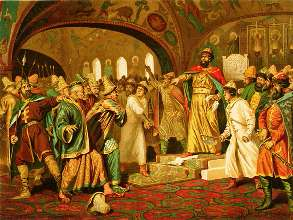

Борис Акунин
Мой календарь
Кому только не сулили это звание. И Петру, и Екатерине, и Ильичу, и Самому Великому Вождю Всех Времен и Народов.
А главный человек российской истории несомненно Иван Васильевич Третий (правил 1462–1505), построивший российское государство и определивший всю его последующую судьбу:
- И то, что это будет слепок с чингисхановской «вертикальной» империи.
- И то, что вечной морковкой, за которой побежит новое царство-государство, станет мечта о «Третьем Риме».
- И стремление к восстановлению границ чингисхановской империи «от океана до океана».
- И бесправие всех перед властью, и всеобщую несвободу, и «закон что дышло».
Сколько потом ни пытались перестроить эту пирамиду как-нибудь по-другому, ничего не получалось.
Иван III порывает с татарской Ордой, чтобы создать собственную.
Иван Васильевич родился 22 января 1440 года, в день памяти апостола Тимофея, в честь которого и был наречен. («Иван» - второе его имя, так называемое «княжеское»). Библия в «Послании к апостолу Тимофею» наставляет: «Рабы, под игом находящиеся, должны почитать господ своих достойными всякой чести» - вот Тимофей-Иван Третий на этом завете свое государство и построил.
Пятьсот с лишним лет россияне обитают в хоромине, возведенной его, великого князя и государя, разумением.
Хороший день, чтобы задуматься: а может, уже хватит?